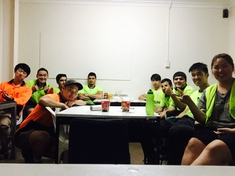
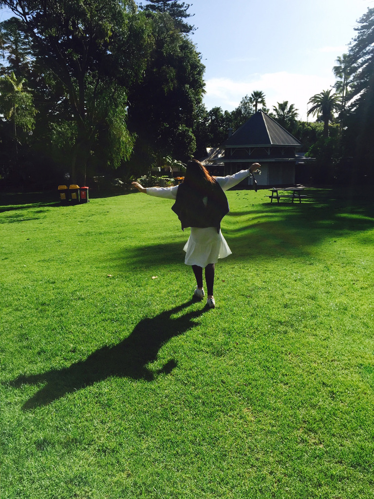
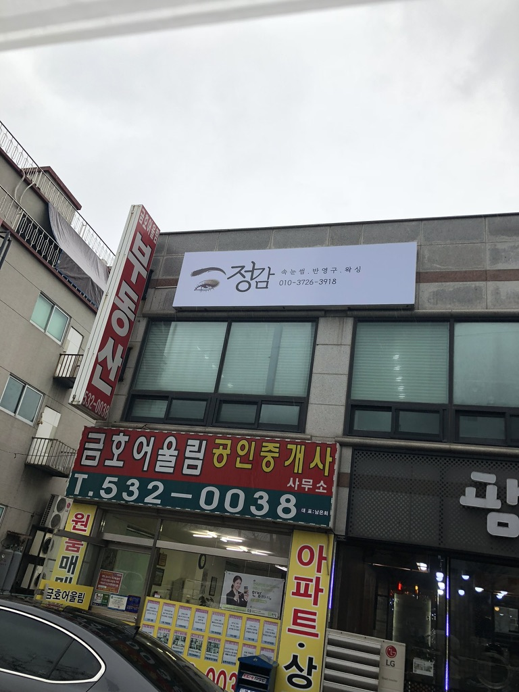
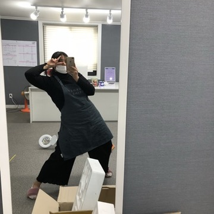
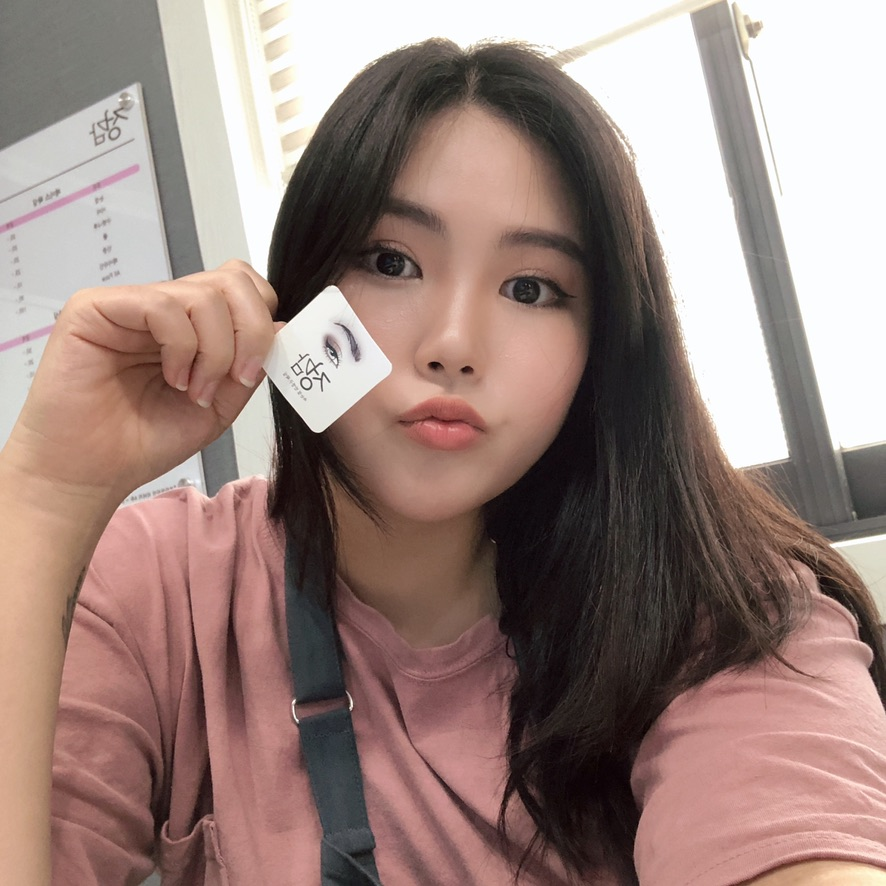
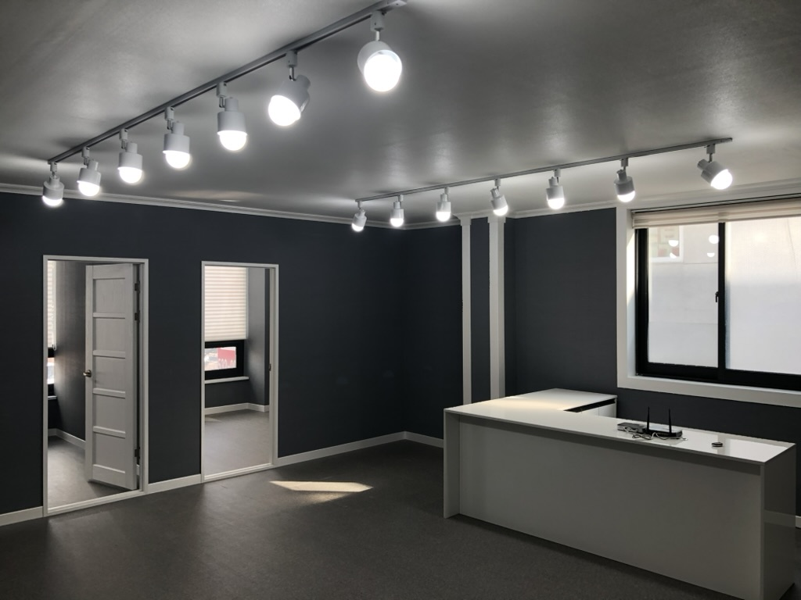
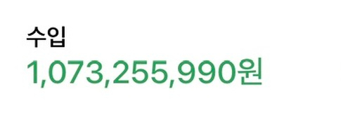
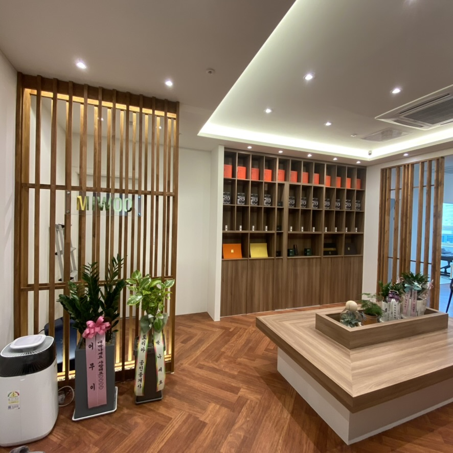
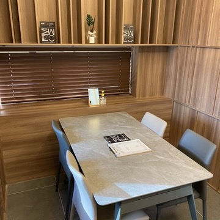
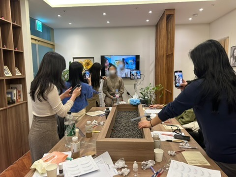

과거
선택지가 없었던 시절
그때의 저는 선택지가 많지 않았습니다.
가난한 환경 속에서 자라며 늘 더 나은 삶을 꿈꿨지만,
무엇을 해야 할지 모르는 사람이었습니다.
23살, 아무 준비 없이 떠났던 호주 워킹홀리데이는
제 인생의 첫 번째 전환점이 되었습니다.
영어 한마디 제대로 하지 못했던 그곳에서
저는 처음으로 깨달았습니다.


그 이후, 더 이상 환경을 탓하지 않기로 했습니다.
성장
결과를 만들기 시작한 시기
한국으로 돌아온 저는 기술과 마케팅을 동시에 붙잡기 시작했습니다.
단순히 기술만 잘해서는 오래 살아남을 수 없다는 것을
일찍 깨달았기 때문입니다.




그 결과,
700만원
오픈 첫 달 매출
6개월
대출 전액 상환
2,000만원
월 평균 매출
2,800만원
월 최고 매출
50만원
천안아산 최초 시술가
1만명+
누적 시술
이라는 결과를 만들어낼 수 있었습니다.
연고도 없는 지역에서 이 결과를 만들 수 있었던 이유는
단순한 기술이 아니라 '구조'를 만들었기 때문입니다.
7년 동안 총 매출 10억 달성




전환
가장 중요한 깨달음
하지만 그 과정에서 저는 한 번 무너지게 됩니다.
매출은 늘어났지만, 몸과 마음은 점점 지쳐갔고
결국 번아웃과 우울을 겪게 되었습니다.
그때 처음으로 스스로에게 질문했습니다.
그리고 깨달았습니다.
제가 가장 행복한 순간은 돈을 벌 때가 아니라,
누군가가 제 도움으로 성장하는 모습을 볼 때라는 것을.
현재
지금 이 일을 하는 이유
그래서 저는 방향을 바꾸기로 했습니다.
돈을 더 버는 사람이 아니라,
더 많은 원장님들이 살아남을 수 있도록 돕는 사람이 되기로.
그렇게 만든 것이
블로그라이터, 홈페이지 구축 서비스, 매출 구조 코칭입니다.
직접 겪어봤기 때문에, 진짜 필요한 것만 만듭니다.
코칭을 받으신 원장님들의 평균 매출이 2배 올랐습니다.
메시지
이 글을 읽고 계신 원장님께
아마 이 글을 읽고 계신 분들 중에는,
이미 샵을 운영하고 있지만 매출이 들쭉날쭉해 고민하는 분도 있을 것이고,
아직 시작 전이지만 막막함 속에서 방향을 찾고 있는 분도 있을 겁니다.
저 역시 같은 시간을 지나왔던 사람이었습니다.
그래서 저는 단순히 기술을 가르치는 사람이 아니라,
혼자서도 살아남을 수 있는 구조를 함께 만들어주는 사람이 되고 싶습니다.
기술만으로는 오래 살아남기 어렵습니다.
하지만 구조를 만들면,
혼자서도 살아남을 수 있습니다.
그것이 제가 이 일을 계속하는 이유입니다.